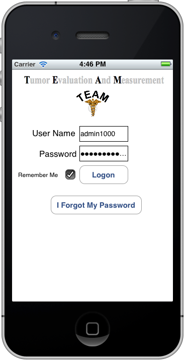

User Names and Passwords
Your user name and password is set by the TEAM coordinator.
Only the TEAM coordinator can assign logins and passwords
via the special TEAM-ADM App. You can select "Remember Me"
to have TEAM save your user name and password for subsequent
easy logins.
Administrative and Normal Users
TEAM provides for two kinds of users. An administrative
user will have the ability to add/change/delete entries in
the TEAM system. Normal users will only be able to view TEAM
data. Your TEAM coordinator will assign you to one of the
user types.
Forgotten Passwords
When your TEAM coordinator added your User Name to the
system, your EMAIL address was also entered and associated
with your User Name. If you forgot your password, you can
request TEAM to send you the password. You will be prompted
to enter your EMAIL address that TEAM will use to send the
password to. If EMAIL you enter is not in the TEAM system
associated with a user/login you will be told that TEAM
couldn't find the EMAIL address. If this happens you should
contact your TEAM coordinator who can reset your password
for you.
Logging Off or Changing User's
It is possible that you have been assigned a user login for
administrative purposes as well as a normal view only user
login. If you need to logoff TEAM to login as a different
user, just go to the main Help page and click on the Logout
button. This will exit TEAM and allow you to re-start the
TEAM App to login as another user.